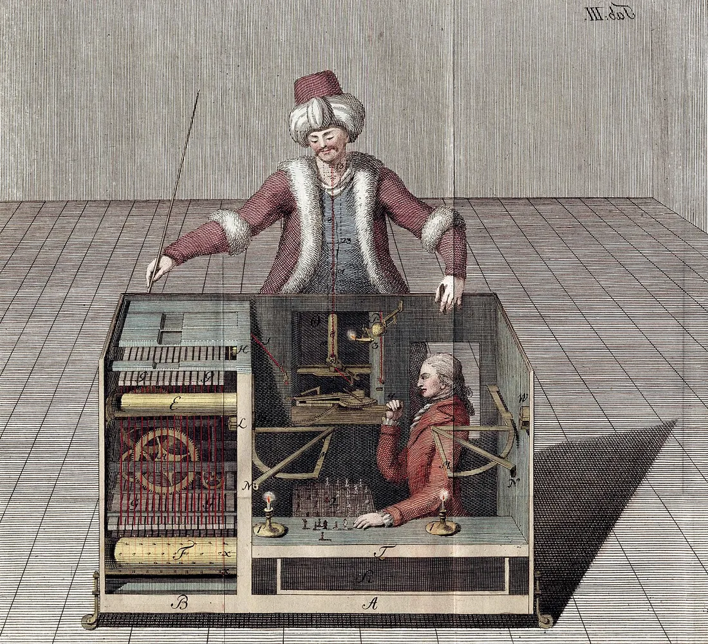

02Informação e mundo digital
Porque estás a ver isto?
Em 1770, um autómato ganhava ao xadrez. Dentro do armário, uma pessoa escondida movia as peças. Num feed também há regras e escolhas que nem sempre conhecemos.

O Turco, o autómato de xadrez de Wolfgang von Kempelen, numa gravura de Joseph Racknitz, 1789. Wikimedia Commons. Domínio público.

Começa por aqui
A regra do feed
Uma plataforma inventada testa três conteúdos: um sketch, uma leitura de poesia e um debate. Escolhes o critério que decide o que aparece primeiro. Depois recebes informação nova, abres três perspetivas e podes mudar de ideias.
Abrir A regra do feedOu escolhe outra pergunta
Três páginas que repetem a mesma frase são três confirmações?
Uma publicação diz que a biblioteca do bairro vai fechar. Procuras a origem da afirmação e decides o que ainda falta confirmar.
Quem está por trás desta página?
Aprendes a sair da página: abres outro separador e perguntas quem é o autor, de quando é a publicação e de onde vem a imagem.
Se a conta é grátis, quem paga?
A direção propõe que a turma gira uma conta da escola numa plataforma de vídeos curtos. Segues quatro rastos: o dinheiro, a atenção, a energia e o lixo. Depois decides.
Quando a máquina faz, quem responde?
Um cartaz junta uma fotografia alterada e um texto gerado por um assistente. Reconstróis quem fez o quê e decides quem responde por ele.
Para aplicar
Contra-feed
Uma performance ou vídeo-performance, feita por ti, que torna visível a regra de um algoritmo. Acompanha-a um manifesto de uso, curto e assinado.
É para uma aula? Vai a A minha aula: Cidadania, módulo 2
Ver tudo neste tema
As páginas deste tema, por tipo. Algumas pertencem aos módulos de Cidadania ou às ferramentas e aparecem aqui por ligação.
Casos para decidir
- A regra do feed
- O rasto da afirmação
- O contexto em falta
- O preço de um minuto
- Quem está dentro da caixa? O caso do cartaz